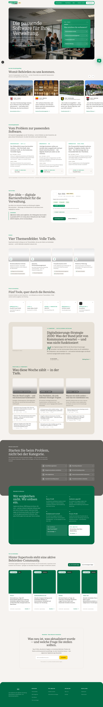
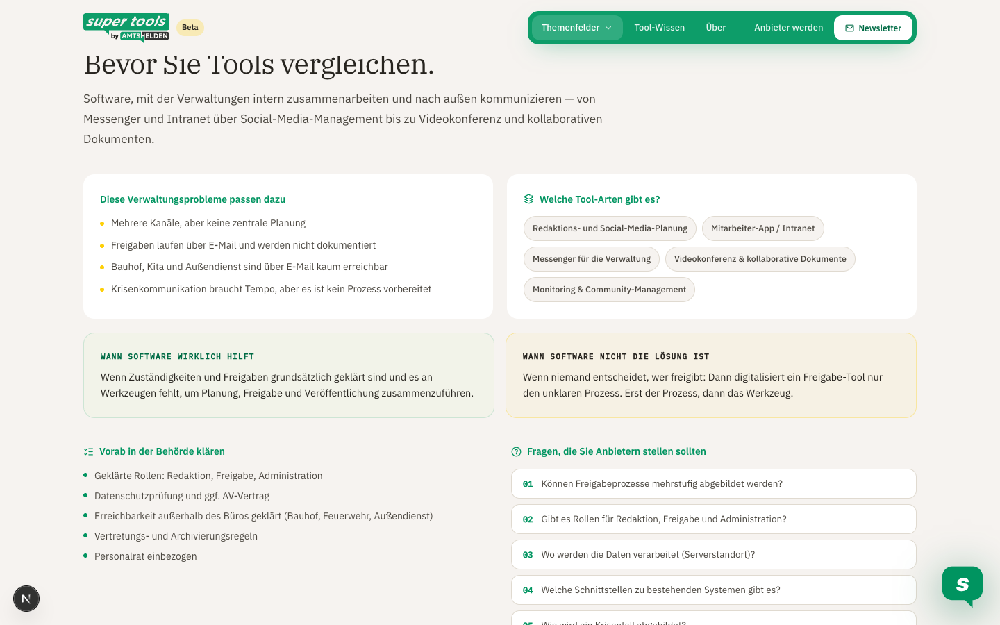
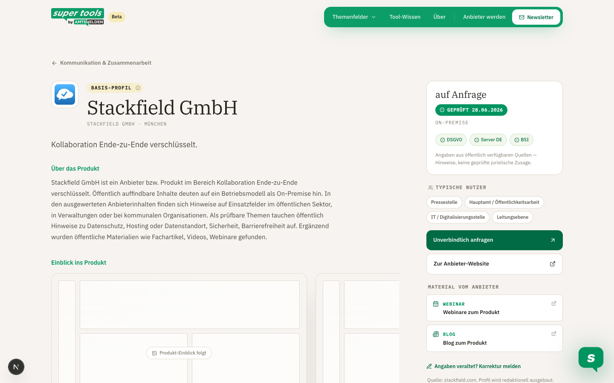

Ziel: gemeinsam prüfen, was bereits steht. Seit dem letzten Stand ist die Beta entlang von Christians Feedback zur Entscheidungshilfe umgebaut — Wording, Profilstruktur, Kategorie-Seiten und Startseite. Details auf der letzten Folie.
Die Kapitelnummern in dieser Agenda tauchen auf jeder Folgeseite wieder auf. So ist klar, welchen Punkt wir gerade diskutieren.
72 Website-Tools74 Tool-RoutenHuman ReviewDie Journey folgt jetzt der Entscheidungslogik: vom Problem über die Kategorie-Einordnung zum Profil als Prüffläche. Nicht „hier sind Tools“, sondern „so erkennen Sie, ob und welche Software passt“.

Problemorientierter Einstieg: „Starten Sie beim Problem, nicht bei der Kategorie“, dazu Anwendungsbeispiele (Ausgangslage → passende Software-Art → echter Anbieter aus dem Verzeichnis).

Entscheidungshilfe VOR der Tool-Liste: Verwaltungsprobleme, Tool-Arten, wann Software (nicht) hilft, Voraussetzungen und Fragen an Anbieter — erst danach die Tools.

Profil als Prüffläche: Einordnung (wofür geeignet / eher nicht), Voraussetzungen, Fragen vor dem Anbietertermin, offene Angaben, Prüfdatum, Quelle und „Korrektur melden“.
Das Google Sheet ist die sichtbare Arbeitsliste hinter Website und Crawler: Fundorte, Kandidaten, Qualifizierung, Review und Website-Ausspielung liegen in getrennten Tabs.
Quelle: Supertools_Datenbasis_Master_und_Discovery. Die Liste ist intern und trennt bewusst Discovery, Qualifizierung, Review und Website-Daten.
| Tab | Was ist das? | Was passiert damit? |
|---|---|---|
| 01_Fuellhoerner | Fundorte und Suchraeume: Messen, Konferenzen, Plattformen, Verbaende, Suchbegriffe und Jahrgaenge. | Breite Discovery: Aus diesen Quellen werden moegliche Anbieter gefunden. |
| 02_Discovery_Inbox | Konkrete Anbieter-Kandidaten aus Fuellhoernern, Empfehlungen oder manuellen Hinweisen. | Kandidaten werden dedupliziert, leicht vorqualifiziert und fuer gezielten Anbieter-Crawl priorisiert. |
| 03_Master_Qualifizierung | Enger gepruefte Kandidaten mit Kriterien, Quellen, Verfuegbarkeit, Bodycopy und Screenshot-Pfaden. | Basis fuer bessere Profile, Nachrecherche-Aufgaben und spaetere Website-/CMS-Freigaben. |
| 04_Review_Historie | Abgelehnte, unsichere oder technisch blockierte Kandidaten. | Begruendung, Warnliste und spaetere Re-Check-Liste. |
| 05_Website_Datenbasis | Alle Tools fuer Prototype, Verzeichnis und Tool-Darstellung. | Aktuelle Ausspielungs-/Datenbasis fuer die Website, nicht automatisch finale Qualitaetsfreigabe. |
Enger geprüfte Kandidaten mit Status, Kriterien, Verfügbarkeit, Bodycopy, Screenshot-Pfaden und Quellen.
| Status | Tool | Cluster | Verfuegbarkeit | Public Sector | Datenschutz | Security | Stand |
|---|---|---|---|---|---|---|---|
| qualified_needs_review | SpeechMind | KI-Protokollierung | unklar | ja | ja | ja | 2026-08-14 |
| watchlist_needs_research | Scriba | KI-Sitzungsprotokollierung | Niedersachsen | ja | ja | ja | 2026-08-14 |
| qualified_needs_review | Convaise | KI-Verwaltungslotse | unklar | ja | ja | ja | 2026-08-14 |
| qualified | Splitbot / KOSMO | KI-Wissensbot | unklar | ja | ja | ja | 2026-08-14 |
| qualified | Findus One | KI-Plattform | unklar | ja | ja | ja | 2026-08-14 |
| qualified | Intrakommuna | Kommunikationsplattform | unklar | ja | ja | ja | 2026-08-14 |
| qualified_needs_review | openDesk | Office- und Kollaborationssuite | unklar | ja | ja | ja | 2026-08-14 |
Breite Ausspielungsbasis für den Website-Prototyp. Nicht gleichzusetzen mit finaler redaktioneller Empfehlung.
| Quelle | Slug | Name | Anbieter | Kategorie | Tier | Stand |
|---|---|---|---|---|---|---|
| website_preview_broad | eye-able-web-inclusion-gmbh | Eye-Able | Web Inclusion GmbH | Kommunikation | basis | 2026-06-28 |
| website_preview_broad | facelift-cloud-gmbh | Facelift Cloud GmbH | Facelift Cloud GmbH | Kommunikation | basis | 2026-06-28 |
| website_preview_broad | socialhub-maloon-gmbh | SocialHub | maloon GmbH | Kommunikation | basis | 2026-06-28 |
| website_preview_broad | stage-stagelink-staffbase-familie | Stage | Stagelink / Staffbase | Kommunikation | basis | 2026-06-28 |
| website_preview_broad | haiilo-gmbh | Haiilo GmbH | Haiilo GmbH | Kommunikation | basis | 2026-06-28 |
| website_preview_broad | ip-dynamics-gmbh | IP Dynamics GmbH | IP Dynamics GmbH | Kommunikation | basis | 2026-06-28 |
| website_preview_broad | parloa-gmbh | Parloa GmbH | Parloa GmbH | Kommunikation | basis | 2026-06-28 |
| website_preview_broad | scompler-gmbh | Scompler GmbH | Scompler GmbH | Kommunikation | basis | 2026-06-28 |
Der Ablauf muss redaktionell beherrschbar bleiben. Nicht jede neue Quelle erzeugt automatisch neue Website-Inhalte.
Nicht jede gefundene Information ist gleich viel wert. Wir brauchen Quellenstufen und klare Warnsignale.
Discovery findet Kandidaten. Der gezielte Crawler sammelt Belege. Die Redaktion entscheidet, was veröffentlicht wird.
Die Liste ist bewusst einfach gehalten: erst fachliche Freigabe, dann Datenprozess, dann Produktivschaltung und Go-to-Market.
Welche 20 Tools sind gut genug, um sie als erste redaktionell zu vertiefen?
Welche Felder müssen vor öffentlicher Veröffentlichung zwingend geprüft sein?
Welcher Kanal liefert den ersten echten Nutzungs- und Conversion-Test?
Christians Kern — „Supertools ist eine Software-Entscheidungshilfe, keine Tool-Liste und kein zweiter Blog“ — ist jetzt die Leitlinie. Strukturell umgesetzt; offen ist bewusst nur echter Inhalt und ein paar Team-Entscheidungen.
Fiktive Demo-Profile (OZG-Portal, VivioAkte) entschärfen oder klar als Demo kennzeichnen?
Welches Content-Format geht zuerst produktiv? Vorschlag: Anbieterfragen.
Grenze Amtshelden ↔ Supertools als verbindliche Redaktionsregel.